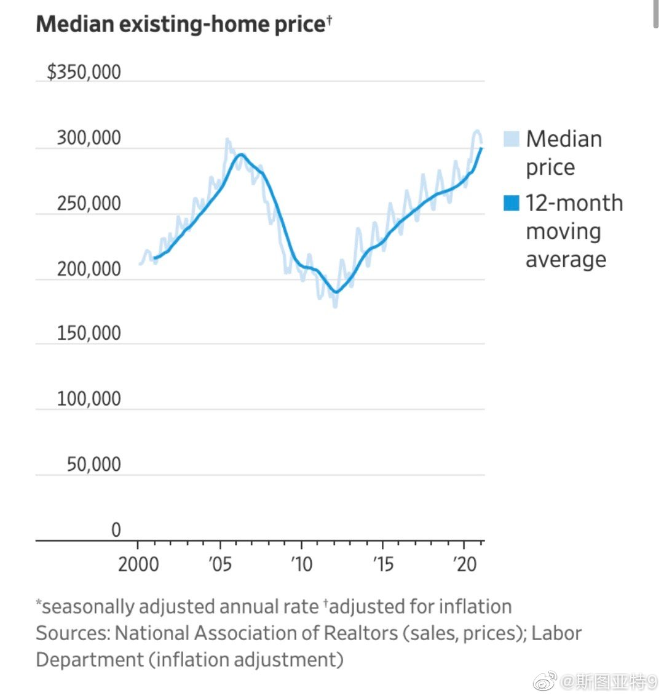

克洛普、瓜迪奥拉、齐达内、安切洛蒂、西蒙尼、图赫尔、曼奇尼、里皮、孔蒂、范加尔。这个前十怎么样？

斯图亚特9
2021-03-18

斯图亚特9
2021-03-18
美国房价终于超越了次贷危机我按的顶点。
- 
斯图亚特9
2021-03-18
今天的华尔街日报网站竟然从头翻到尾没有翻到任何和亚特兰大枪击案有关的内容。虽然WSJ评论是右翼立场，但一直觉得新闻还是中立的。难道新闻内容选取上也已经向右翼小报看齐了？
斯图亚特9
2021-03-18
美国也开始疫苗外交了 美国打算把一些牛津疫苗发送给墨西哥和加拿大。发送的数量只是仓库里3000万支里的400万支。剩下的是打算和欧洲交换什么吗？
美国打算把一些牛津疫苗发送给墨西哥和加拿大。发送的数量只是仓库里3000万支里的400万支。剩下的是打算和欧洲交换什么吗？